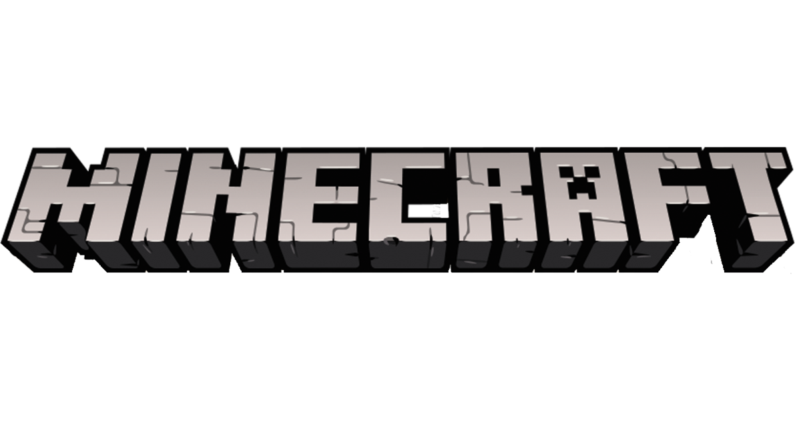

сайт mojang
Mojang Studios (от швед. mojäng — «штуковина») — компания, занимающаяся разработкой компьютерных игр, принадлежащая Xbox Game Studios. Наиболее известна как разработчик игры Minecraft. Основана в мае 2009 года Маркусом Перссоном. Офис компании находится в Стокгольме. В 2014 году была куплена корпорацией Microsoft за 2,5 миллиарда долларов